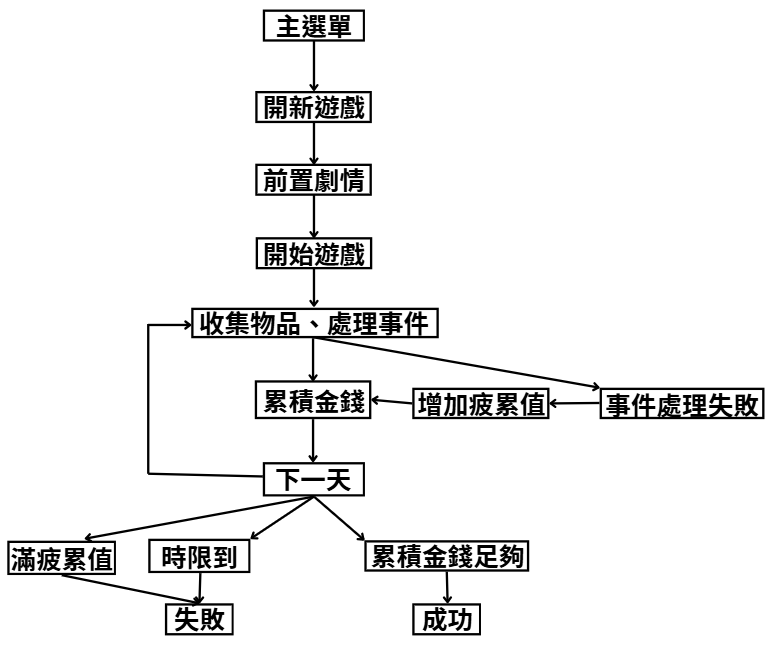
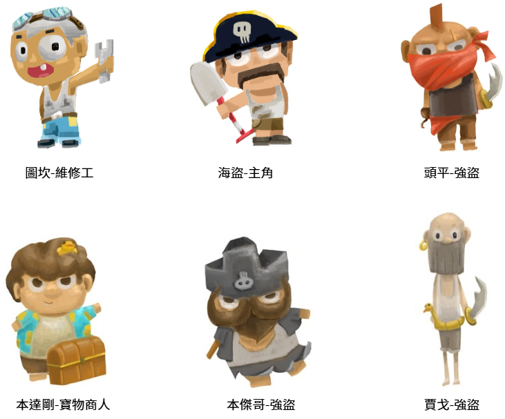
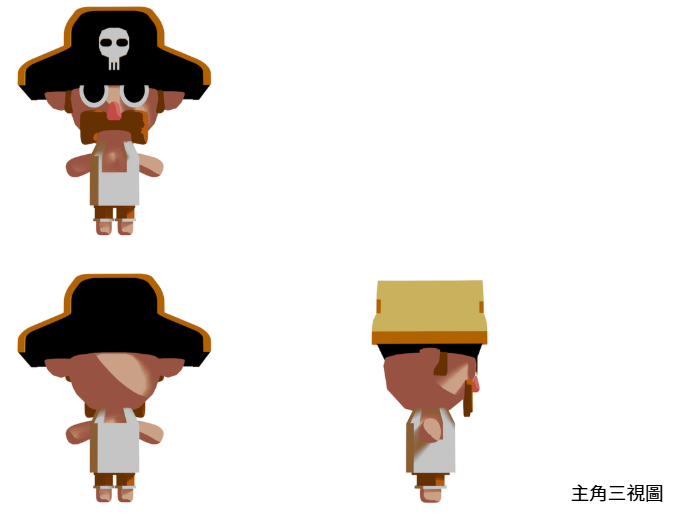
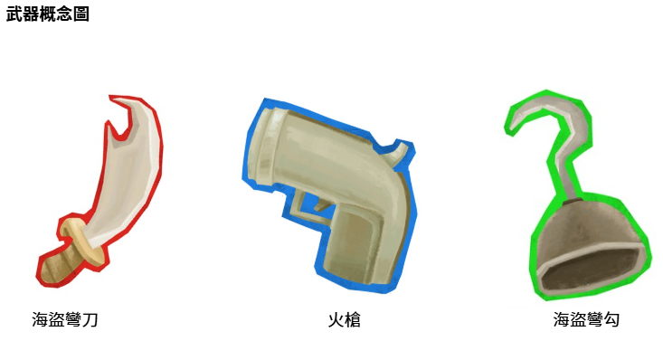
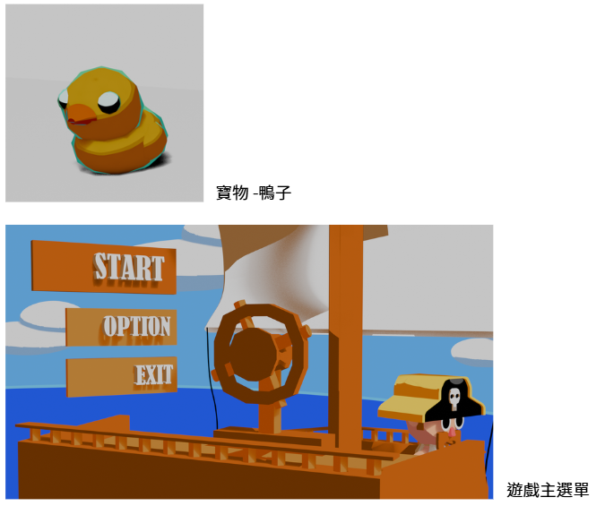
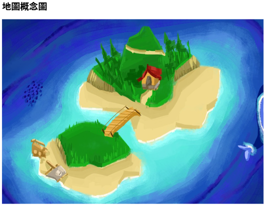
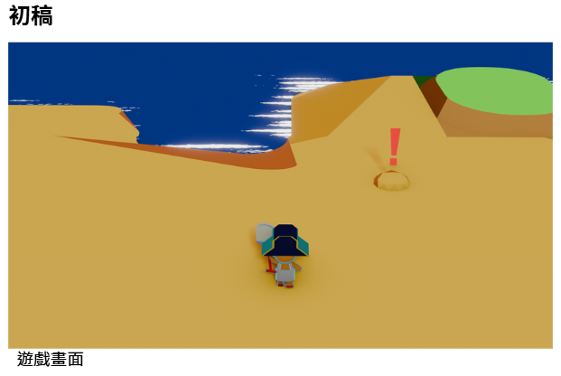
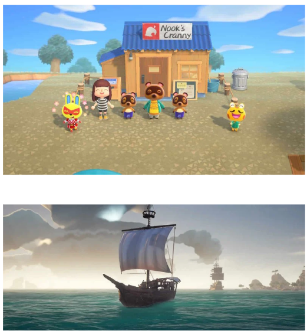

{kind=link}
{kind=link}

遊戲設計
整組:
個人:
| 組長:黃聖維 組員:劉宣之/黃翊晴/侯奕伶/趙堉倫/秦小思 |
| 指導老師:陳賢錫 |
目錄
一、 製作動機
二、 遊戲目的
三、 為甚麼玩家會想要遊玩這款遊戲
一、 操作方式
二、 玩法介紹
三、 流程圖
四、 市場分析
一、 概念風格
二、 風格圖
▲遊戲名稱 海島、菜鳥、海盜
一、
製作動機
我想挑戰自己製作一款 3D 小遊戲。
知道技術上還無法做到精緻的作品，
正因如此，我選擇將故事和玩法縮限，
讓遊戲更小巧、簡單易上手。
透過簡短直接的故事情境，玩家可以快速進入遊戲核心，
不會因為複雜或脫節的劇情而感到尷尬。
我希望這款遊戲能展現
「即使規模不大，也能帶來完整又有趣的體驗」。
二、
遊戲目的
本遊戲的目的在於提供玩家一個簡單易上手、
故事精煉的小品體驗。透過縮限遊戲規模，
避免冗長劇情造成遊玩脫節的情況，並確保操作與體驗的流暢性。
同時，本作品也是我挑戰自我、嘗試製作 3D 遊戲的實驗，
藉此累積遊戲設計與開發經驗。
三、
為什麼玩家會想要遊玩這款遊戲
輕鬆、短小、好上手。不像大型 3D 遊戲需要花上好幾小時熟悉規則，
只需要一點時間，就能體驗到完整的冒險流程。
「菜鳥海盜、壞掉的船、荒島求生」這個題材本身帶有喜感，
讓人不會覺得壓力太大。
玩法 單人遊玩、探索
本作描述一名初次出海的海盜，因意外擱淺在一座盛產寶物的海島上，
被迫留下來籌錢修船。
島上的商人、修船工與強盜表面各自為政，實際上卻形成默契，
將挖掘寶物的高風險工作轉嫁給外來者，
並透過交易、修船期限與暴力威脅，拖延主角離開的時間。
隨著探索深入，玩家逐漸察覺這座島並非無法逃離，
而是沒有人願意讓你離開。
最終，玩家必須在有限的時間與資源壓力下，
選擇揭穿騙局離開，或留下成為這套剝削結構的一部分。
完整故事
本作講述一名初次出海的海盜，在航行途中於一座資源豐富的海島附近發生意外，
船隻擱淺而無法繼續航行。
島上散落著大量可挖掘的寶物，但挖掘過程危險、耗費體力，且時常引來衝突。
島上居住著數名看似各自為政的人物——寶物商人、修船工，以及遊走於島上的強盜。
表面上，他們只是勉強維持秩序、各自求生；
實際上，這些人早已形成默契，將挖掘寶物的風險轉嫁給外來者。
菜鳥海盜為了修船，被迫不斷下坑挖掘，
而島民則透過交易、修船期限與暴力威脅，
確保寶物流向自己，同時拖延主角離開的時間。
強盜負責攔截與施壓，商人負責回收成果，修船工則維持「只要撐下去就能離開」的假象。
隨著時間推進，玩家逐漸察覺，
這座島並非無法逃離，
而是沒有人願意讓你輕易離開。
挖寶越久，疲累與風險越高，
留下來的人，也越來越不像單純的受害者。
在有限的時間與資源壓力下，
玩家必須在求生與看穿真相之間做出選擇。
最終，主角可以設法離開島嶼，
或選擇留下，成為這套剝削結構的一部分。
這是一段關於被利用、妥協，以及是否選擇成為共犯的故事。
一、
操作方式
WASD-上下左右移動
F-場景互動鍵
滑鼠左鍵-選擇物品
二、
玩法介紹
你是一個第一次出海就把船撞爛的菜鳥海盜。
現在船擱淺在一座奇怪的小島上，沒錢、沒食物、只有一把鏟子。
任務很單純：在沙坑裡挖寶、賣錢、修船。
你能攜帶的東西重量有限，
背包滿了只能回營地找寶物商人 本達剛 賣掉換錢，
再拿錢去找那個懶惰的修船工 圖坎 付工錢。
不過他那張維修工證照快過期了，
如果在期限內還沒籌夠錢——那就永遠定居在此吧。
但很快你就會發現——這島有點怪。
當你在島上尋找寶物時，時常會碰見島上著名的三位強盜，
本傑哥、賈戈和頭平，他們會跟你討寶物，不給就開揍。
你只能選擇逃跑或戰鬥，但要注意自己的疲累值，若疲累值滿了，
那主角會累得無法挖寶物，只能眼睜睜的看著圖坎的維修證照過期。
整個遊戲就圍繞著這樣的循環：
挖掘 → 遭遇 → 戰鬥or逃跑 → 賣錢 → 度過一天 → 再挖一次。
1. 金額與天數系統
主角必須在 5 日內籌到修船費。
金額依難度而異：
簡單模式（副手級）…… 400 元
困難模式（新手級）…… 600 元
地獄模式（菜鳥級）…… 800 元
每天只能探索一次。
探索中遭遇敵人、取得寶物、賣東西，
都會影響是否能在五天內成功修船。
2. 挖掘系統(可挖掘到的物品，寶物與武器)
挖掘沙地可取得寶物。價值如下：
眼罩………20 元
塑膠鴨……30 元
指北針……40 元
望遠鏡……50 元
不可以挖掘沙地取得寶物。價值如下：
強盜金幣……60 元
只能透過打敗敵人取得。
挖掘沙地可取得武器。價值如下：
海盜彎刀（長劍）……10 元
海盜彎鉤（短刀）……20 元
火槍（槍械）……30 元
玩家一天最多攜帶六件物品（寶物＋武器加總）。
滿了可選擇拋棄。
3. 武器系統
武器可挖到，也能拿去賣錢，但主要用途是：
戰鬥時使用
用完即銷毀（從背包內消失）
開局自帶 三把武器（佔背包空間）
4. 疲累值系統
主角初始疲累值：0/100
輸給敵人 → 疲累值上升
疲累值滿 100 → 遊戲結束（太過疲累沒辦法挖寶物）
5. 戰鬥系統（核心：剪刀石頭布）
玩家會在探索途中 遭遇三種盜賊敵人。
戰鬥方式類似 剪刀石頭布：
克制關係
長劍克短刀
短刀克槍械
槍械克長劍
勝利:獲得強盜金幣，武器消耗。
失敗:增加疲累值，武器消耗。
平手:戰鬥結束，武器消耗。
逃跑:隨機拋棄物品。
6. 敵人類型
1. 賈戈— 高個子
使用武器：長劍
戰勝：獲得 強盜金幣 ×1
戰敗：疲累值 +10
逃跑：隨機拋棄 1 件物品
2.頭平— 紅面罩
使用武器：長劍、短刀（隨機）
戰勝：獲得 強盜金幣 ×1
戰敗：疲累值 +20
逃跑：隨機拋棄 2 件物品
3.本傑哥— 大鬍子
使用武器：長劍、短刀、槍械（隨機）
戰勝：獲得 強盜金幣 ×1
戰敗：疲累值 +30
逃跑：隨機拋棄 3 件物品
7. 其他角色
寶物商人:本達剛
島上唯一願意跟菜鳥海盜交易的商人，
負責：
收購寶物
收購武器
每天只能交易一次。
是玩家每天維持收入與進度的重要 NPC。
維修工:圖坎
島上唯一擁有修理執照的。
海盜:主角
菜鳥。
三、
流程圖

五、
SWOT分析
規模小、上手快：不用大地圖和複雜系統，
玩家一進來就能直接玩。
劇情短且有趣：角色個性鮮明，很容易讓人留下印象。
明確的循環：探索→挖掘→收集→修船。
玩法重複性高：主要核心就是挖掘和收集，
長時間可能缺乏變化。
美術與技術限制：3D 質感可能偏簡單。
劇情深度有限：故事短小，缺乏更完整的世界觀。
市場接受小品遊戲：玩家很樂於嘗試輕鬆、
無厘頭的小遊戲。
容易延伸：
未來可加新寶物、 NPC、島嶼，像「DLC 式」擴充。
容易被忽略：在眾多獨立遊戲中，
規模小的作品可能不夠顯眼。
玩家流失快：玩幾輪後可能覺得內容差不多，留不住人。
技術挑戰：雖然是小遊戲，
但 3D 環境和挖掘系統仍需要時間和經驗去克服。
一、 概念風格
3D、俯視角遊戲、低面數建模
二、風格圖






•動物森友會-風格、視角
•sea of thieve-船隻設計
